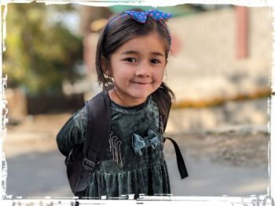

キルギス

| Facebookページへは各 |  |
から飛べます |
【キルギス1】アルマトイに夜遅く到着して一泊。翌朝一番の国際バスで国境を越えてキルギスの首都ビシュケクへ向かい、そのままイシククル湖南岸の村ボコンバエバを目指します。
Akira Mizuiさんの投稿 2024年9月16日月曜日
【キルギス2】おとぎ話のような絶景、スカスカにやってきました。山岳国キルギスにおいても珍しい特異な景観を満喫してから、東部最大のまちカラコルへと向かいます。
Akira Mizuiさんの投稿 2024年9月17日火曜日
【キルギス3】キルギス第四の都市カラコル。どれだけ大きいのかと思いきや歩いて巡れるコンパクトでハートウォーミングな町で、多くの人々と触れ合うことができました。 ここらで気合を入れ直し、今度は遥か西へと向かいます。
Akira Mizuiさんの投稿 2024年9月18日水曜日
【キルギス4】キルギスでもっともイスラム色の強いまちの一つ、アルスランボブ。山間の小さな村ですが中心部は賑やかです。くるみを産出する美しい森や巡礼の場でもある滝を擁するこの村でホームステイします。
Akira Mizuiさんの投稿 2024年9月20日金曜日
【キルギス5】キルギス第二の都市オシは過激派の戦闘員リクルート拠点でもあるそうですが平和で賑やかなまちです。オシを観る前にカラハン朝の古都である隣町ウズゲンを日帰りで訪ねてみます。
Akira Mizuiさんの投稿 2024年9月21日土曜日
【キルギス6】旅の最後に首都ビシュケク散策。約一週間で七つもの地区を訪れるという忙しなさでしたが、移動そのものも楽しみながら過ごすことができました。
Akira Mizuiさんの投稿 2024年9月23日月曜日